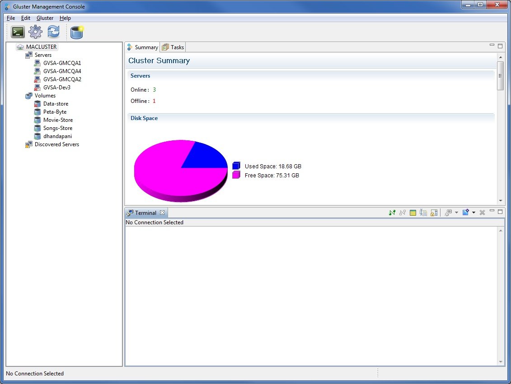

The Gluster Management Console provides a stand-alone ANSI or vt102 terminal emulator that enables you to connect to servers through SSH.
It processes ANSI control characters, including NUL, backspace, carriage return, linefeed, and a subset of ANSI escape sequences sufficient to enable the use of screen-oriented applications, such as vi, Emacs, and any GNU readline-enabled application such as Bash, bc, or ncftp.
Note: Gluster Terminal window is not a fully compliant vt100 or vt102 terminal emulator.

You must provide SSH connection details to connect to the required host. Here is a screenshot of how to configure these settings on Gluster Management Console.